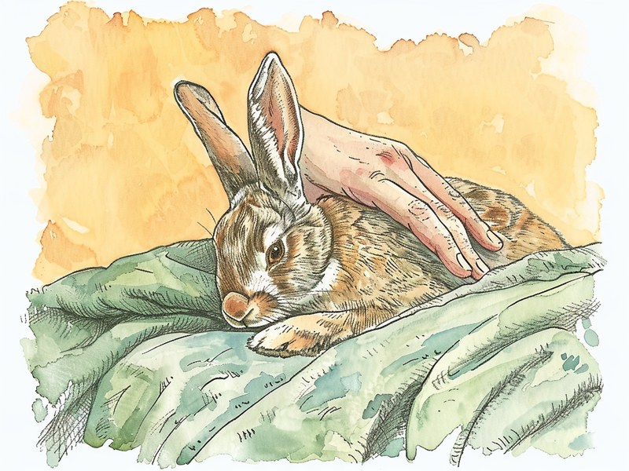

うさぎは不調を隠すのが上手な動物です。だからこそ「食べているか」「便は出ているか」「いつも通り動いているか」という毎日の小さな観察が、体調不良に早めに気づくいちばんの手がかりになります。 Rabbits are good at hiding when they feel unwell. Watching three simple things every day - whether they eat, whether they poop, and whether they move as usual - is the best way to catch trouble early.
🔍 ちょっと寄り道:相手の小さな変化に気づけるかどうかは、人同士の関係でも大切なポイントです。気になった方は相性診断も覗いてみてください。
食欲の変化:「食べない」はうさぎにとって大きなサイン
うさぎの体調をみるうえで、まず注目したいのが食欲です。全く食べない、あるいは明らかに食べる量が少ないという変化は、動物病院のサイトで要注意のサインとして挙げられています。
牧草を主食にするうさぎは本来、一日を通して少しずつ食べ続ける動物ですから、「いつもなら喜ぶおやつに見向きもしない」「牧草入れが減っていない」といった様子は、飼い主が気づきやすい変化のひとつです。目安として、12時間以上何も食べていない場合には受診を勧めている動物病院の情報もあります。
「そのうち食べるだろう」と長く様子を見るのではなく、食べない状態が続いていると感じたら、早めに動物病院へ相談することが勧められています。毎日の食事のときに、食べた量をざっくりでも把握しておく習慣が、この変化に気づく助けになります。
出典: マーズペットクリニック「うさぎの食欲不振について」 mars-vet.com
排泄物の変化:便の大きさ・形・量を毎日見る
うさぎの便は、お腹の調子を映す分かりやすいバロメーターです。エキゾチックアニマルを専門に診る動物病院2院の情報がそろって指摘しているのは、便が小さくなる、毛でつながって数珠つなぎのようになる、量が減る、あるいは出なくなる、下痢や軟便が続く、といった変化が消化器の異常を示すサインだということです。トイレ掃除は毎日のことですから、そのついでに「昨日と比べて粒が小さくないか」「数が減っていないか」「形がいびつになっていないか」を見る癖をつけておくと、変化に気づきやすくなります。
とくに、数珠つなぎの便は毛を飲み込みすぎているサインとして知られており、換毛期にはブラッシングで抜け毛を減らしておくことも予防につながります。便の異常が続くときは、食欲の変化とあわせて動物病院に伝えると、状況が伝わりやすくなります。
出典: みわエキゾチック動物病院「うさぎの消化管うっ滞」 miwaah.com / 吉祥寺動物病院「うさぎのうっ滞」 kichijoji-ah.com
様子の変化:じっとしている・うずくまる・お腹を気にする
食欲や便のように数えられる変化ではないぶん見落としやすいのが、「なんとなくいつもと違う」という様子の変化です。暗い所でじっとしている、元気がなくぐったりしている、お腹を痛そうにしている、うずくまって動かない、といった姿は体調不良の兆候として挙げられています。
うさぎは本来、警戒心の強い動物で、不調をできるだけ表に出さないようにふるまうといわれます。そのため、飼い主から見て「明らかにおかしい」と感じたときには、すでにしばらく前から不調が続いている可能性も考えられます。
普段のうさぎがどんなふうに過ごしているか——好きな場所、活発になる時間帯、飼い主が近づいたときの反応——を知っておくことが、こうした変化に気づくための土台になります。「気のせいかな」と思うくらいの違和感でも、食欲や便の変化と重なっているなら、動物病院に相談する材料として十分です。
消化管うっ滞:うさぎに多く、早めの受診が勧められている理由
ここまでのサイン——食べない、便が減る・出ない、じっとして動かない——が組み合わさったときに、動物病院のサイトでよく名前が挙がるのが「消化管うっ滞(GIスタシス)」です。消化管の動きが落ちて、食べたものや毛がお腹の中で滞ってしまう状態を指します。
複数の独立した動物病院のサイトで、この状態は重篤な状態になることがあり、急激にお腹が張ってショック状態に陥るなど急変することもある、と説明されています。うさぎの飼い主が「食べない」「便が出ない」を軽く見ないように言われるのは、この背景があるからです。
調べた範囲では、長時間の様子見を勧めている動物病院の情報は見当たらず、いずれも早めの受診を勧めているという点で一致していました。「様子見してよい時間」を自分で決めるのではなく、うさぎの診療に慣れた動物病院に早めに相談する、というのが飼い主にできるいちばん確実な対応と考えられます。
出典: みわエキゾチック動物病院 miwaah.com / 池田動物病院「うさぎの消化管うっ滞ガイド」 ikedaanihos.com / 吉祥寺動物病院 kichijoji-ah.com / マーズペットクリニック mars-vet.com
様子見をせず動物病院に相談したいサイン
最後に、動物病院のサイトで「早めの受診」が勧められているサインを整理しておきます。池田動物病院とマーズペットクリニックの記述で共通して挙げられているのは、まず「全く食べず、便もほとんど出ず、元気がない」という三つの変化が重なっている状態です。
単独では見過ごしてしまいそうな変化も、この組み合わせで現れているときは注意が必要とされています。あわせて、歯ぎしりをしている(痛みのサインとされます)、体を触ると冷たい、うずくまったまま動かない、といった様子も受診を勧める目安として挙げられています。
これらに気づいたときは、自己判断で様子を見たり、家庭でできる対処を試したりするのではなく、早めに動物病院へ相談することが勧められています。受診の際は、いつから食べていないか、最後に便が出たのはいつか、普段と違う様子は何かをメモして伝えると、診察の助けになります。うさぎを診てくれる病院が近くにあるかどうかは、元気なうちに調べておくと安心です。
出典: 池田動物病院 ikedaanihos.com / マーズペットクリニック mars-vet.com
- 全く食べず、便もほとんど出ず、元気がない(3つが重なっている)
- 歯ぎしりをしている(痛みのサインとされる)
- 体を触ると冷たい
- うずくまったまま動かない
うさぎの健康観察は、「食べたか」「出したか」「動いたか」の三つに絞るとぐっと続けやすくなります。毎日の食事とトイレ掃除のついでにこの三つを確かめる習慣があれば、それだけで小さな変化に気づける確率が上がります。日々の飼育環境の整え方は、うさぎの飼育アイテムガイドもあわせてどうぞ。
ミニクイズ:うさぎの便が小さく数珠つなぎになっているのは、単なる個体差?(タップして答えを見る)
こたえ×。便が小さくなる・数珠つなぎになる・量が減るといった変化は、エキゾチック専門の動物病院2院がそろって消化器異常のサインとして挙げています。食欲や元気の変化とあわせて、早めに動物病院へ相談することが勧められています。